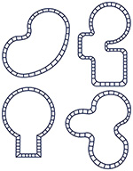

Kate S. Dillon is a designer, printmaker, and filmmaker currently studying at the University of San Francisco.
HALLOWEEN CONCERT POSTER
KUSF Promotions Dept. 2023
Adobe Illustrator, Photoshop
A poster to promote KUSF’s (USF’s College Radio Station) Night of the Living Dead Halloween Show. I was given a list of attributes to include and had to create a 8 x 11 inch poster to inform the viewer about the show.
NORA VASCONCELLOS LOGO
Visual Communications 1
Adobe Illustrator
A logo created for Nora Vasconcellos based on her personal interests/experiences. In class, we were tasked to create a logo for one of our favorite female designers for women's history month. The purpose of this project is to represent a women in the field based on our research of them.
BREATHE, POSTER
Visual Communications 1
Adobe Illustrator, Photoshop
An informational poster created to spread the word about the detrimental effects of improperly located factories. In class we were tasked to cover an important subject via informational poster that we were passionate about, and visually display a statistic. This work cover’s children’s lung disease as a result of factory pollution. The message behind this is to think of long terms effects before choosing locations for factories.
ARCHITECTURE COMPOSITION
DESIGN FUNDAMENTALS
Adobe Illustrator
A repetition collage made up of different architectural elements that are found at the University of San Francisco. To create this work, pictures of different architectural elements were traced and manipulated on Illustrator, and then copied and repeated 9 times to create a composition. The purpose of this work was to learn how to build compositions and work on skills in the adobe suite.

POOL COPING, ZINE
VISUAL COMMUNICATIONS 1
Adobe Illustrator, Photoshop, InDesign
A Zine (self published mini magazine) all about pool skateboarding and the history behind it. In class we were given the open ended prompt to make our own zine about one of our passions. In the zine you will find history lessons, quotes, pictures, and more all relating to pool skateboarding. The purpose of this work was to share something I am passionate about with the world.